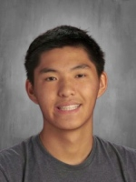

About Me

My name is Albert Zhang, and I currently attend the Morris County School of Technology, where I am
enrolled in the Computer Science Academy. I am an Asian-American citizen of the United States of America
and currently live in New Jersey.
I have been learning computer science for the past two years and want to continue to learn more. Using my knowledge in computer science, I have created numerous web pages, applications, and programs for various uses.
Outside of comptuer science, I enjoy playing basketball and video games. I am currently the starting point guard on my schools Varsity basketball team. Additionally, I enjoy playing video games like Valorant and Fortnite.
My dream is to become a computer scientist who specializes are in various fields. I want to be an all-rounder and learn all their is about computer science.
I have been learning computer science for the past two years and want to continue to learn more. Using my knowledge in computer science, I have created numerous web pages, applications, and programs for various uses.
Outside of comptuer science, I enjoy playing basketball and video games. I am currently the starting point guard on my schools Varsity basketball team. Additionally, I enjoy playing video games like Valorant and Fortnite.
My dream is to become a computer scientist who specializes are in various fields. I want to be an all-rounder and learn all their is about computer science.
Education
Over the past two years, I have immersed myself in the study
of computer science at the Morris County School of Technology, gaining proficiency in a variety of
programming languages. My journey began with
Java, where I learned the fundamentals of computer programming and honed my skills in writing
efficient and scalable code.
In addition to C++, I have also become proficient in HTML, CSS, and JavaScript, which have enabled me to build dynamic and responsive web applications. Through these technologies, I have developed a solid understanding of web development, from front-end design to back-end logic.
Furthermore, I have explored C++, allowing me to appreciate the versatility and robustness of this language in various applications, from desktop to mobile development. My experience with Java has also reinforced my understanding of object-oriented principles and design patterns.
Throughout my time in the Computer Science Academy, I have worked on numerous projects that have challenged me to think critically and solve complex problems. These projects have not only enhanced my technical skills but also taught me the importance of teamwork, communication, and continuous learning.
As I continue to learn about Computer Science, I am excited to further deepen my knowledge and explore new technologies. My goal is to leverage my skills to contribute to innovative projects and make a meaningful impact in the field of technology.
In addition to C++, I have also become proficient in HTML, CSS, and JavaScript, which have enabled me to build dynamic and responsive web applications. Through these technologies, I have developed a solid understanding of web development, from front-end design to back-end logic.
Furthermore, I have explored C++, allowing me to appreciate the versatility and robustness of this language in various applications, from desktop to mobile development. My experience with Java has also reinforced my understanding of object-oriented principles and design patterns.
Throughout my time in the Computer Science Academy, I have worked on numerous projects that have challenged me to think critically and solve complex problems. These projects have not only enhanced my technical skills but also taught me the importance of teamwork, communication, and continuous learning.
As I continue to learn about Computer Science, I am excited to further deepen my knowledge and explore new technologies. My goal is to leverage my skills to contribute to innovative projects and make a meaningful impact in the field of technology.